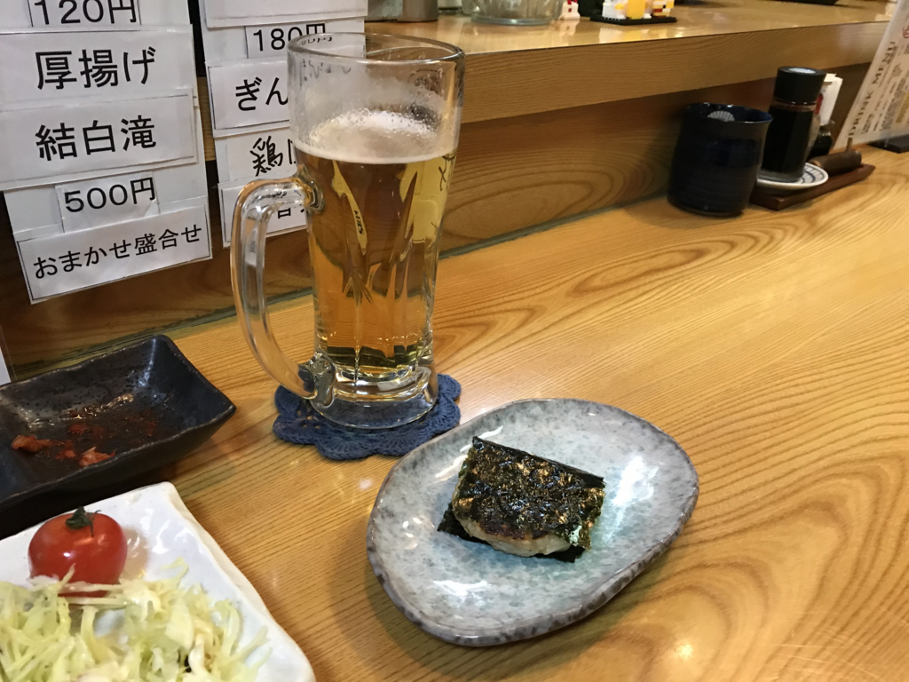
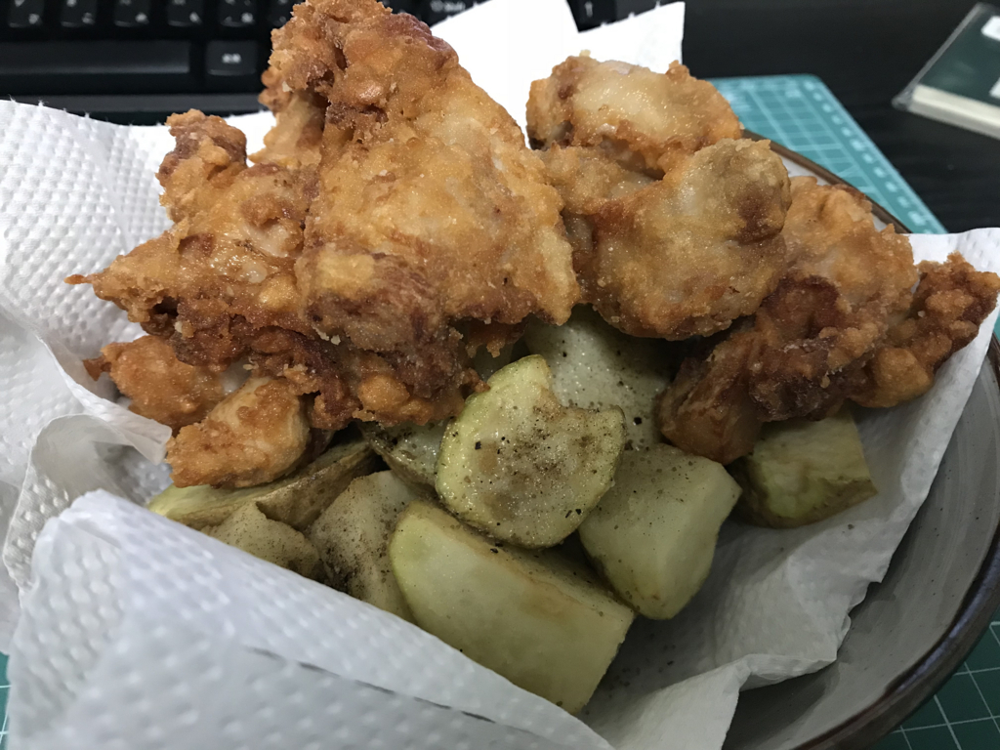

2018年1月12日の日記：揚げ物の日
執筆日時：
木曜日の晩は、あれから温泉と居酒屋に行った。外が寒いせいか、浴場はいつもより濃密な湯気が充満しており、メガネをかけていても一寸先が闇……ならぬ靄で、割と楽しかった。
ちなみに、着物を着ているとよく「寒くないですか」と聞かれる。たぶん草履をはいている足が冷たそうに思うのだろうけれど、足袋はインナーを履いたり、冬用のなかがモコモコしたヤツがあるので心配には及ばない。下着は別に洋服と共通でもいいと思うし、ユニクロのヒートテックのような高性能なものが使える。実際、僕も股引はヒートテックを愛用しており、洋服と変わらぬ温かさを享受できている。

また、上体はネル肌着で武装しているので、これまた温かい。ウチの場合は、作務衣と共通で使えるデザインのものを使っている。抜け毛を集めてしまう（← 頭髪じゃなくて、衣類のな？）という弱点はあるけど、かなり優秀だ。この上に長襦袢、長着、上着（羽織は面倒なのでたいていは省略）を着て出かけるわけで、洋服より寒いなんてことはまったくない。部屋だと丹前（褞袍）でぬくぬく。お布団をまとっているみたいで、これまた最強だ。
古文の時間に「日本家屋は夏をむねとすべし」みたいな例文を習ったと思うけど（鴨長明？ 兼好法師？）、当時は「それやと冬寒いやん」と思ってた。でも、寒いのは着こめばなんとかなるんだよね。その点、着物はいくらでも重ね着できんことないし（十二単！？）、冷房のない時代、夏涼しいことを重視するのはもっともだと最近実感した。涼しい家に、あったかい衣類。これが本来の日本の生活スタイルなのかもな――お金がないと冬はさぞつらいだろうけど。
ちなみに、浴衣は言うほど涼しくないと思う。とくに女性は暑いんじゃないかな？ ♂やからしらんけど。

居酒屋は客が僕一人で、読書が捗った。今読んでるのは『鉱物 人と文化をめぐる物語』という本。金、銀、銅なんかにまつわる歴史の本を読んだつながりで、目についたから明屋書店で購入した。
内容は……鉱物学者さんかな？ が書いたエッセイを集めたもので、噺がいちいち面白く、知的興味を掻き立てられる。
")
- 作者: 堀秀道
- 出版社/メーカー: 筑摩書房
- 発売日: 2017/12/07
- メディア: 文庫
- この商品を含むブログを見る
自分は石にはまったく興味を持てないし、宝石なにそれ、花崗岩ぐらいだったらわかるかな、みたいなしょうもない人間だけど、石に夢中になれる人の感受性はまぶしいなって思う。思うに、自分が大したことのない大人になってしまったのは、そうした感受性に欠けている部分が災いしたんだろう。イケてるヒトがちょっと気にするところを、自分はスルーしてしまう。そういうことの積み重ねが、人間の厚みにつながっていくんやろうな。まぁ、自分が無理しても「意識が高い」だけになりそうなので、無理するつもりはないけど……着物とか着るようになったことがキッカケにはならんかな、と思うこともある。実際、時代小説読んでも（正月は司馬遼太郎の短編小説が懐かしくなって、Kindle で売ってるやつはほぼ読破した）装いの描写には目が留まるようになった。
居酒屋では、鏡開きだからといってお餅をサービスしてもらった。「今年もよろしくお願いします」といわれたけど、こちらこそ伏してお願いしたい。ビールが美味しくて、独りカウンターでだるだる本が読める店は多くない。近所にカウンターのあるお店がもう一軒あるけど、前行ったときはビールがちょっと臭くて、以降行ってない。

昨日は仕事が忙しくてだるかった以外は、特記すべきことなし。揚げ物欲が高まったので、芽が出かけたじゃがいもと、そろそろやばそうな鶏肉を大量に揚げた。野菜なんか絶対食ってやらねー、この日は揚げ物だけだ。唐揚げもしゃもしゃ、幸せ。
自炊で揚げ物というのは長年やってこなかったのだけど、去年ぐらいからチャレンジしてる。油ポットなんかも買ってみたりなんかして……中華鍋にドバっと油馴染ませて野菜素揚げしたあとに油を戻したりできるようになったのなんかは、料理の自由度が高まった感じでよい。揚げ物用の鍋も、温度計付きのものを購入してみた。フチに材料ごとの油温度の目安が書かれているのが、僕のような初心者にはありがたいよねー。

- 出版社/メーカー: ヨシカワ
- メディア: ホーム&キッチン
- この商品を含むブログを見る

貝印 2重口 オイルポット 1.2L 油だれストップ設計 テフロンセレクト DZ-0709
- 出版社/メーカー: 貝印
- メディア: ホーム&キッチン
- この商品を含むブログを見る
揚げ物は後処理が大変、というのが先入観だったけど、揚げ物で匂いのちょっとついた油で炒め物しても平気な人間なので、うまく料理のサイクルに組み込んでしまえば、大した労力ではなかった。なんでもやってみないとダメだなって思う。
ちなみに、今日は何もしない。開発熱もひと段落したし、朝からビールでも飲みながら Civilization 6 したり、本読んだり、タブレットでアニメ見てだらだら過ごす。たぶん、日記も書かないだろう（宣言